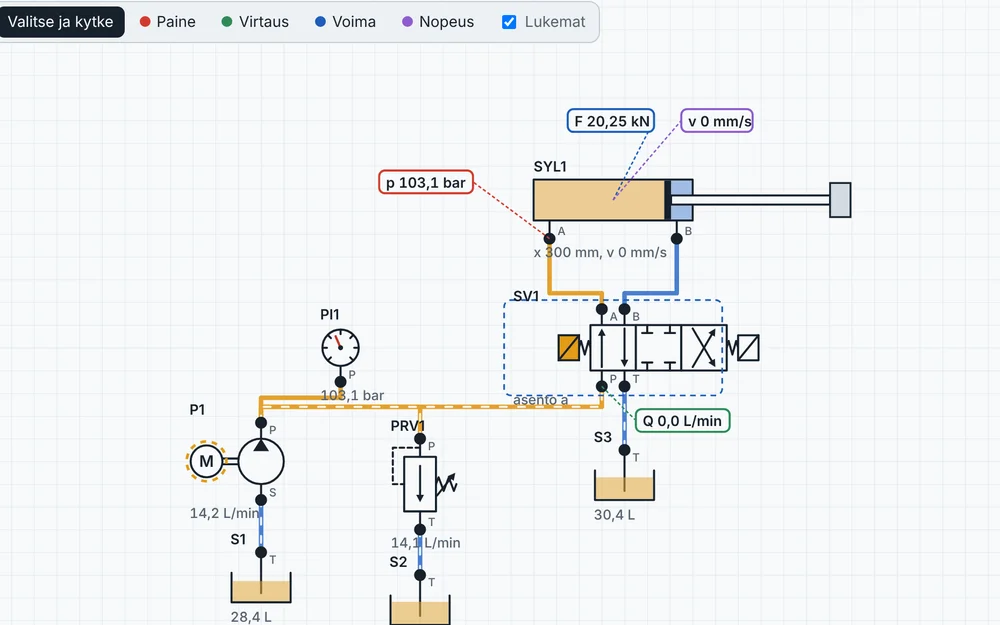

Hydrauliikkasimulaattori
Hydraulipiirit ISO 1219 -piirrosmerkeillä: paine, tilavuusvirta, voima ja nopeus reaaliajassa. Komponenttien ja letkujen mitoitus.
Selaimessa toimivat simulaattorit hydrauliikan, elektroniikan, automaation, materiaalitekniikan ja projektinhallinnan opetukseen. Ne toimivat millä tahansa tietokoneella ja puhelimella ilman asennusta, suomeksi, englanniksi ja saksaksi.
Juho Pirttilahti · Seinäjoen ammattikorkeakoulu (SEAMK) · CC BY 4.0

Hydraulipiirit ISO 1219 -piirrosmerkeillä: paine, tilavuusvirta, voima ja nopeus reaaliajassa. Komponenttien ja letkujen mitoitus.

DC- ja AC-piirit ja tehoelektroniikka nelikanavaisella oskilloskoopilla: tasasuuntaajat, hakkurit, invertterit, muuntaja ja DC-moottori.

Relelogiikka, moottorien ohjauspiirit, anturit, sähköpneumatiikka ja PLC-ohjelmointi tikapuukaaviolla. Turvarele ja vikojen simulointi.

Teräksen lämpökäsittely: nuorrutus, induktiokarkaisu ja mustanitraus kovuusprofiileineen ja mikrorakenteineen. Kiderakenteet, Fe–C-piirros ja vetokoe.

Projektit Gantt-kaaviona: kriittinen polku, pelivarat, resurssit ja tasoitus, ansaittu arvo ja Monte Carlo -ennuste. Näet heti, miten myöhästynyt tehtävä vaikuttaa koko projektiin. Harjoitukset ja omat projektit.
Jokainen simulaattori on yksi verkkosivu. Sen voi tallentaa omalle koneelle ja käyttää ilman verkkoyhteyttä.
Valmiit esimerkit odotettuine arvoineen sekä käyttöohje harjoitustehtävineen.
Automaattiset testit vertaavat tuloksia käsinlaskuun, teknisiin kortteihin ja standardeihin jokaisen muutoksen yhteydessä, ja opettaja validoi ilmiöt lukukausittain.
Simulaattorin Palaute-painike avaa valmiiksi täytetyn ilmoituksen, johon piiri tai asetukset liitetään, joten tilanne voidaan toistaa täsmälleen.